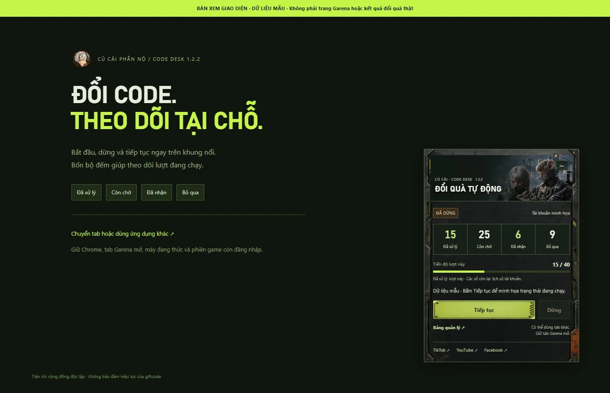
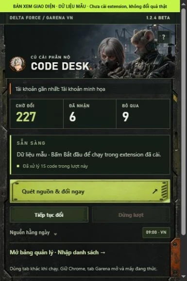

Tiện ích cộng đồng của Củ Cải Phẫn Nộ, giúp nhập lần lượt giftcode trên trang Garena Delta Force, theo dõi kết quả và nhớ code đã xử lý. Bản miễn phí tải qua GitHub, dùng trên Chrome máy tính.
chrome://extensions vào thanh địa chỉ Chrome, bật Chế độ dành cho nhà phát triển / Developer mode.extension chứa manifest.json.Ở phần Assets của GitHub, chọn đúng ZIP đã đóng gói theo tên trên. “Source code” là bản chụp toàn bộ repository do GitHub tự tạo. Xem hướng dẫn của Chrome ↗
Mở trang đổi quà Garena, đăng nhập tài khoản game và kiểm tra đúng tên tài khoản. Trong khung Code Desk ở góc trang, bấm Bắt đầu. Có thể Dừng, Tiếp tục và thu gọn tại chỗ.
Đăng nhập tài khoản Google trên Chrome là phiên riêng, không thay cho đăng nhập Garena. Code Desk không yêu cầu bạn nhập mật khẩu game vào tiện ích.
Bạn có thể dùng tab hoặc ứng dụng khác. Giữ Chrome, tab Garena mở và máy đang thức. Nếu gặp CAPTCHA hoặc hết phiên, hoàn tất trực tiếp trên Garena rồi tiếp tục.
Trong popup, Quét nguồn & đổi ngay sẽ quét nguồn rồi mở lượt đổi. Muốn tự chọn thời điểm, mở bảng quản lý, dùng Quét nguồn ngay hoặc dán danh sách tại Thêm code của bạn, mỗi dòng một code. Có thể chọn file TXT, CSV hoặc JSON.
Lịch quét mặc định 09:00 giờ Việt Nam. Quét xong, tự mở Garena và đổi code mới là tùy chọn riêng, mặc định tắt. Code trong ảnh, video và bình luận cần nhập bổ sung; bộ quét hiện đọc nguồn chữ công khai.
Dùng tìm kiếm và bộ lọc trong Danh sách & kết quả để xem chi tiết. Code tìm thấy là ứng viên; hiệu lực và quyền nhận quà do Garena quyết định.
Bấm Dừng, chờ code đang gửi có kết quả. Tải ZIP mới, chép nội dung extension vào đúng thư mục cũ, bấm Tải lại trên thẻ tiện ích rồi tải lại trang Garena. Bản cài từ thư mục cập nhật thủ công.
Gửi lỗi tại GitHub Issues kèm phiên bản và thông báo. Issues là nơi công khai; chỉ chia sẻ phần cần thiết, tránh mật khẩu, cookie, OTP và token.
Hai ảnh dưới dùng đúng mã giao diện tiện ích với dữ liệu mẫu. Chúng là bản xem giao diện, chưa phải ảnh xác nhận đã cài hoặc đổi quà trên tài khoản thật.


Hướng dẫn dễ làm theo, chuyện loot và những pha gameplay Delta Force dở khóc dở cười. Theo dõi Củ Cải ở đây: